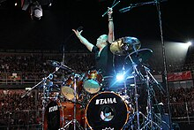
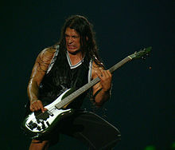

 V roce 2000 Metallica nahrála poprvé skladbu pro soundtrack – „I Disappear“ – k filmu Mission: Impossible II.
Právníci kapely rozpoutali jeden z největších soudních procesů v hudební historii – kvůli zpřístupňování muziky na internetu ve formátu MP3 zdarma proti firmě Napster. Udělali si tak mnoho nepřátel, avšak bránili tím autorská práva nejen svých písní. Lars, který stál v čele tohoto sporu, nakonec soud vyhrál. V létě Metallica hrála na 13 koncertech ve Spojených státech v rámci Summer Sanitarium Tour.
17. ledna 2001 z Metallicy odešel Jason Newsted – jako důvod uvedl, že hraní hudby, kterou miluje, se odrazilo na jeho zdraví jak fyzickém, tak psychickém. Metallica ve třech znovu vešla do studia. Na postu baskytaristy zaměstnali producenta Boba Rocka. V polovině července se Hetfield ocitl na odvykací kúře ze závislosti na alkoholu a jiných látkách. 10. prosince, po půl roce, Hetfield konečně ukončil svoje léčení.
 Už v první polovině prosince začala Metallica hledat nového baskytaristu, který by se s nimi vydal na koncertní šňůru po Evropě, jméno ale nepadlo. Mezi kandidáty byli třeba: Mike Inez (Alice in Chains, Ozzy Osbourne), Joey Vera (Armored Saint ), Hetfieldův přítel Pepper Keenan (Corrosion of Conformity a Down) a další. V polovině ledna byli dopsáni Robert Trujillo (ex- Suicidal Tendancies, ex- Ozzy Osbourne) a Eric Forrest (ex- VoiVod). Nakonec se 24. ledna 2003 připojil k Metallice právě Trujillo. St.Anger vyšlo 5. června. Album od některých fanoušků sklidilo kritiku, protože na albu nejsou slyšet sólové kytary, které byly pro Hammetta tak charakteristické. Titulní skladba „St. Anger“ vyhrála cenu Grammy v kategorii Best Metal Performance a další „Some Kind of Monster“ byla na cenu nominována v kategorii Best Hard Rock Performance.
V této době točili režiséři Joe Berlinger a Bruce Sinofsky o Metallice dokument Some Kind Of Monster. Film má dvě a půl hodiny. Je v nich výřez z mnoha dnů každodenního života kapely. Mezi lety 2001 a 2003 bylo nahráno tisíc hodin materiálu. Rozpočet filmu je okolo 1,5 miliónu dolarů. Premiéra filmu byla v lednu 2004 na filmovém festivalu v Park City.
V listopadu 2004 skončila jeden a půl roku trvající koncertní šňůra 180 vystoupení. Časopis Rolling Stone vyhlásil Jamese Hetfielda mužem roku 2004. Hetfield dostal 12. května 2006 speciální cenu. Jedná se o Cenu Stevie Ray Vaughana a James si ji zasloužil díky podpoře fondu MusiCares MAP a díky vytrvalé pomoci závislým hudebníkům s odvykací léčbou.
Metallica se v červnu roku 2006 vydala na miniturné Escape from the studio '06, které začalo na obrovském festivalu v Německu Rock am Ring 2006. Tento koncert byl vysílán v přímém přenosu na MTV. Skupina zahrála na koncertech celé legendární album Master of Puppets.